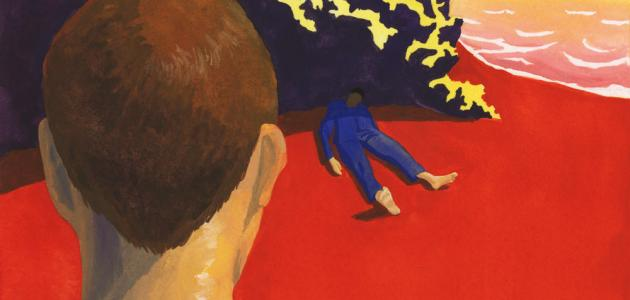

تعتبر رواية "الغريب" لألبير كامو إحدى أشهر الروايات عالميًا ، تنتمي الرواية للمذهب العبثي في الأدب ، لتلخيص الرواية ، التي تتألف من 150 صفحة ، بجملة واحدة فيمكننا أن نقول
"اليوم ماتت أمي، أو ربما ماتت بالأمس.. لست أدري" ، وهي العبارة التي استهلّ بها كامو الرواية ، لتعبر عن الخصلة النفسية الأهم التي سنعيشها مع ميرسو بطل الرواية : اللامبالاة.
تبدأ الرواية ، بوفاة أم ميرسو ، وبردة فعله الباردة ، أو المنعدمة ، على وفاتها والتي توضح جانبًا مهمًا من شخصيته ، فميرسو إنسان لا يجيد التظاهر ، ويتصرف وفق مشاعره وأحاسيسه،
لذا لا يمانع أن يتناول القهوة والسجائر أمام جثمان أمه مادام بحاجة لذلك . لا يحبّ ميرسو شيئًا، ولا يرفض بالمقابل شيئًا آخر ، لا بكاء على ميت ولا فرح بلقاء عزيز ، لا دفاع عن النفس ولا رغبة بالنجاة، حتى قوله للحقيقة يظهر بسلبية ولا مبالاة واضحة بما قد تؤدي له تلك الحقيقة.القتل بالنسبة لهذا الغريب أمر غير مهم ككل شيء، فلا قيمة لحياة ولا معنى لموت، وليس ثمة فارق إن متّ في العشرين أو الثمانين من عمرك، محكومًا بالإعدام أو في سرير غرفتك
[1]

وعبثيته هذه تخوله لارتكاب جريمة قتل دون تخطيطٍ أو دافعٍ أو معرفةٍ بمن يقتل
لماذا ارتكب ميرسو جريمته ؟ لأجل لا شيء!
هو نفسه لا يدري ، لذا لم يكن بالإمكان أن يدافع عن نفسه أمام جريمة قتل باردة دون دوافع أو مبررات ، وهو الجانب العبثي الذي يعبر عن فلسفة ألبير كامو في الرواية.
هذا الجانب الغريب في شخصية ميرسو يجعل المجتمع يتخوف منه ، الأمر الذي يفقده تعاطف الناس حوله عند حاجته لذلك ، بل على العكس ، فقد أدانه محيطه لغرابته تلك أكثر مما أدانه لجريمته التي ارتكبها
[2]


 By Fai
By Fai